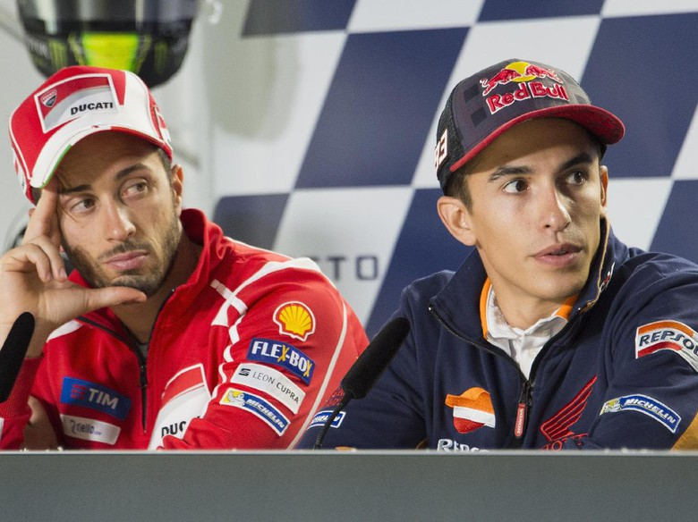

Olahraga
Jelang MotoGP ValenciaMembandingkan Hasil Marquez dan Dovizioso di Valencia

MotoGP Valencia akan penentu siapa berhak menyandang status juara dunia 2017. Antara Marc Marquez dan Andrea Dovizioso, siapa yang punya catatan lebih oke di sana? Menjelang seri terakhir di Valencia, Marquez dalam posisi lebih diuntungkan untuk mempertahankan gelar juara dunianya. Rider Repsol Honda itu mengoleksi 282 poin, sementara Dovi berjarak 21 angka di belakangnya (261). Dengan komposisi seperti itu, Marquez akan bisa menjadi juara hanya dengan finis di urutan 11. Sementara Dovi akan jadi kampiun jika dia jadi juara dan di saat bersamaan Marquez finis di urutan 12 atau lebih buruk. Terlepas dari hitung-hitungan tersebut, Marquez punya statistik yang sangat bagus di Sirkuit Ricardo Tormo. Khusus di kelas MotoGP dia selalu berhasil naik podium sejak tahun debutnya di 2013. Berturut-turut sejak 2013 Marquez berhasil finis di posisi 3, 1, 2, 2 di Valencia. Saat masih berlaga di Moto2, Marquez menjadi juara di musim 2012. Sementara di 2011 dia tidak berpartisipasi. Hasil terburuk Marquez di Valencia adalah finis di posisi 17, ketika itu dia masih mengendarai motor 125cc pada musim 2009. Bagaimana dengan Dovizioso? Dovi tak punya statistik oke di Valencia. Dari sembilan kali tampil di sana pada kelas MotoGP, dia cuma sekali naik podium. Itu terjadi pada 2011 saat masih mengendarai Honda. Di kelas 250 cc dia malah tak sekalipun finis di atas podium. Sementara di kelas 125cc Dovi sempat jadi runner up di 2004.